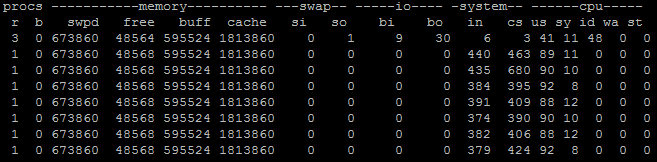
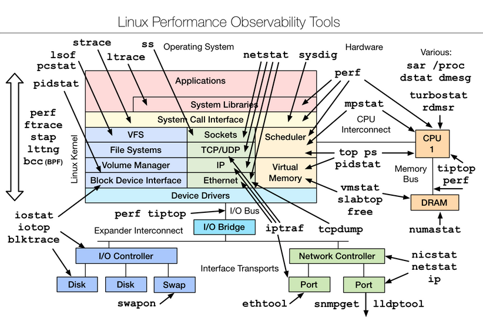

33 后台服务出现明显“变慢”，谈谈你的诊断思路？¶
在日常工作中，应用或者系统出现性能问题往往是不可避免的，除了在有一定规模的 IT 企业或者专注于特定性能领域的企业，可能大多数工程师并不会成为专职的性能工程师，但是掌握基本的性能知识和技能，往往是日常工作的需要，并且也是工程师进阶的必要条件之一，能否定位和解决性能问题也是对你知识、技能和能力的检验。
今天我要问你的问题是，后台服务出现明显“变慢”，谈谈你的诊断思路？
典型回答¶
首先，需要对这个问题进行更加清晰的定义:
- 服务是突然变慢还是长时间运行后观察到变慢？类似问题是否重复出现？
- “慢”的定义是什么，我能够理解是系统对其他方面的请求的反应延时变长吗?
第二，理清问题的症状，这更便于定位具体的原因，有以下一些思路：
- 问题可能来自于 Java 服务自身，也可能仅仅是受系统里其他服务的影响。初始判断可以先确认是否出现了意外的程序错误，例如检查应用本身的错误日志。 对于分布式系统，很多公司都会实现更加系统的日志、性能等监控系统。一些 Java 诊断工具也可以用于这个诊断，例如通过 JFR（Java Flight Recordera>），监控应用是否大量出现了某种类型的异常。 如果有，那么异常可能就是个突破点。 如果没有，可以先检查系统级别的资源等情况，监控 CPU、内存等资源是否被其他进程大量占用，并且这种占用是否不符合系统正常运行状况。
- 监控 Java 服务自身，例如 GC 日志里面是否观察到 Full GC 等恶劣情况出现，或者是否 Minor GC 在变长等；利用 jstat 等工具，获取内存使用的统计信息也是个常用手段；利用 jstack 等工具检查是否出现死锁等。
- 如果还不能确定具体问题，对应用进行 Profiling 也是个办法，但因为它会对系统产生侵入性，如果不是非常必要，大多数情况下并不建议在生产系统进行。
- 定位了程序错误或者 JVM 配置的问题后，就可以采取相应的补救措施，然后验证是否解决，否则还需要重复上面部分过程。
考点分析¶
今天我选择的是一个常见的并且比较贴近实际应用的的性能相关问题，我提供的回答包括两部分。
- 在正面回答之前，先探讨更加精确的问题定义是什么。有时候面试官并没有表达清楚，有必要确认自己的理解正确，然后再深入回答。
- 从系统、应用的不同角度、不同层次，逐步将问题域尽量缩小，隔离出真实原因。具体步骤未必千篇一律，在处理过较多这种问题之后，经验会令你的直觉分外敏感。
大多数工程师也许并没有全面的性能问题诊断机会，如果被问到也不必过于紧张，你可以向面试官展示诊断问题的思考方式，展现自己的知识和综合运用的能力。接触到一个陌生的问题，通过沟通，能够条理清晰地将排查方案逐步确定下来，也是能力的体现。
面试官可能会针对某个角度的诊断深入询问，兼顾工作和面试的需求，我会针对下面一些方面进行介绍。目的是让你对性能分析有个整体的印象，在遇到特定领域问题时，即使不知道具体细节的工具和手段，至少也可以找到探索、查询的方向。
- 我将介绍业界常见的性能分析方法论。
- 从系统分析到 JVM、应用性能分析，把握整体思路和主要工具。对于线程状态、JVM 内存使用等很多方面，我在专栏前面已经陆陆续续介绍了很多，今天这一讲也可以看作是聚焦性能角度的一个小结。
如果你有兴趣进行系统性的学习，我建议参考 Charlie Hunt 编撰的《Java Performance》或者 Scott Oaks 的《Java Performance：The Definitive Guide》。另外，如果不希望出现理解偏差，最好是阅读英文版。
知识扩展¶
首先，我们来了解一下业界最广泛的性能分析方法论。
根据系统架构不同，分布式系统和大型单体应用也存在着思路的区别，例如，分布式系统的性能瓶颈可能更加集中。传统意义上的性能调优大多是针对单体应用的调优，专栏的侧重点也是如此，Charlie Hunt 曾将其方法论总结为两类：
- 自上而下。从应用的顶层，逐步深入到具体的不同模块，或者更近一步的技术细节单元，找到可能的问题和解决办法。这是最常见的性能分析思路，也是大多数工程师的选择。
自下而上。从类似 CPU 这种硬件底层，判断类似Cache-Miss之类的问题和调优机会，出发点是指令级别优化。这往往是专业的性能工程师才能掌握的技能，并且需要专业工具配合，大多数是移植到新的平台上，或需要提供极致性能时才会进行。
例如，将大数据应用移植到 SPARC 体系结构的硬件上，需要对比和尽量释放性能潜力，但又希望尽量不改源代码。
我所给出的回答，首先是试图排除功能性错误，然后就是典型的自上而下分析思路。
第二，我们一起来看看自上而下分析中，各个阶段的常见工具和思路。需要注意的是，具体的工具在不同的操作系统上可能区别非常大。
系统性能分析 中，CPU、内存和 IO 是主要关注项。
对于 CPU，如果是常见的 Linux，可以先用 top 命令查看负载状况，下图是我截取的一个状态。
可以看到，其平均负载（load average）的三个值（分别是 1 分钟、5 分钟、15 分钟）非常低，并且暂时看并没有升高迹象。如果这些数值非常高（例如，超过 50%、60%），并且短期平均值高于长期平均值，则表明负载很重；如果还有升高的趋势，那么就要非常警惕了。
进一步的排查有很多思路，例如，我在专栏第 18 讲曾经问过，怎么找到最耗费 CPU 的 Java 线程，简要介绍步骤：
- 利用 top 命令获取相应 pid，“-H”代表 thread 模式，你可以配合 grep 命令更精准定位。
- 然后转换成为 16 进制。
- 最后利用 jstack 获取的线程栈，对比相应的 ID 即可。
当然，还有更加通用的诊断方向，利用 vmstat 之类，查看上下文切换的数量，比如下面就是指定时间间隔为 1，收集 10 次。
输出如下：
{kind=link}
如果每秒上下文（cs，context switch）切换很高，并且比系统中断高很多（in，system interrupt），就表明很有可能是因为不合理的多线程调度所导致。当然还需要利用pidstat等手段，进行更加具体的定位，我就不再进一步展开了。
除了 CPU，内存和 IO 是重要的注意事项，比如：
- 利用 free 之类查看内存使用。
- 或者，进一步判断 swap 使用情况，top 命令输出中 Virt 作为虚拟内存使用量，就是物理内存（Res）和 swap 求和，所以可以反推 swap 使用。显然，JVM 是不希望发生大量的 swap 使用的。
- 对于 IO 问题，既可能发生在磁盘 IO，也可能是网络 IO。例如，利用 iostat 等命令有助于判断磁盘的健康状况。我曾经帮助诊断过 Java 服务部署在国内的某云厂商机器上，其原因就是 IO 表现较差，拖累了整体性能，解决办法就是申请替换了机器。
讲到这里，如果你对系统性能非常感兴趣，我建议参考Brendan Gregg提供的完整图谱，我所介绍的只能算是九牛一毛。但我还是建议尽量结合实际需求，免得迷失在其中。
{kind=link}
对于 JVM 层面的性能分析，我们已经介绍过非常多了：
- 利用 JMC、JConsole 等工具进行运行时监控。
- 利用各种工具，在运行时进行堆转储分析，或者获取各种角度的统计数据（如jstat -gcutil 分析 GC、内存分带等）。
- GC 日志等手段，诊断 Full GC、Minor GC，或者引用堆积等。
这里并不存在放之四海而皆准的办法，具体问题可能非常不同，还要看你是否能否充分利用这些工具，从种种迹象之中，逐步判断出问题所在。
对于 应用 Profiling，简单来说就是利用一些侵入性的手段，收集程序运行时的细节，以定位性能问题瓶颈。所谓的细节，就是例如内存的使用情况、最频繁调用的方法是什么，或者上下文切换的情况等。
我在前面给出的典型回答里提到，一般不建议生产系统进行 Profiling，大多数是在性能测试阶段进行。但是，当生产系统确实存在这种需求时，也不是没有选择。我建议使用 JFR 配合JMC来做 Profiling，因为它是从 Hotspot JVM 内部收集底层信息，并经过了大量优化，性能开销非常低，通常是低于 2% 的；并且如此强大的工具，也已经被 Oracle 开源出来！
所以，JFR/JMC 完全具备了生产系统 Profiling 的能力，目前也确实在真正大规模部署的云产品上使用过相关技术，快速地定位了问题。
它的使用也非常方便，你不需要重新启动系统或者提前增加配置。例如，你可以在运行时启动 JFR 记录，并将这段时间的信息写入文件：
然后，使用 JMC 打开“.jfr 文件”就可以进行分析了，方法、异常、线程、IO 等应有尽有，其功能非常强大。如果你想了解更多细节，可以参考相关指南。
今天我从一个典型性能问题出发，从症状表现到具体的系统分析、JVM 分析，系统性地整理了常见性能分析的思路；并且在知识扩展部分，从方法论和实际操作的角度，让你将理论和实际结合，相信一定可以对你有所帮助。
一课一练¶
关于今天我们讨论的题目你做到心中有数了吗？ 今天的思考题是，Profiling 工具获取数据的主要方式有哪些？各有什么优缺点。